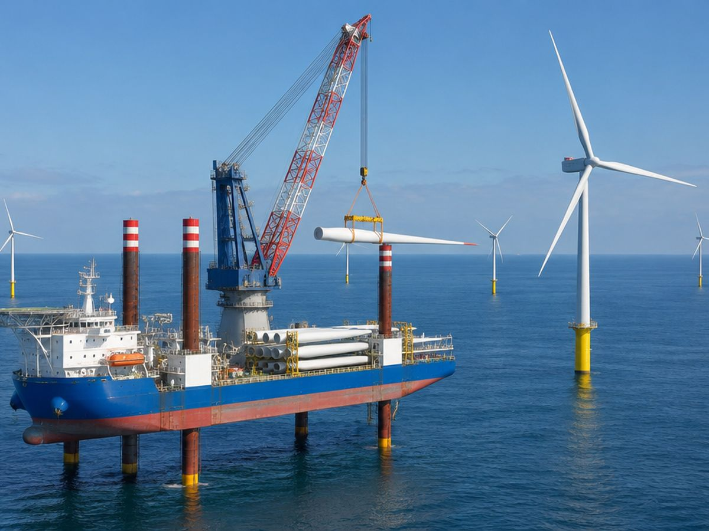

스마트제조 솔루션 기업 ㈜동인엔시스(대표 백민기)가 10월 7일부터 8일까지 부산 벡스코 제1전시장에서 열리는 아시아 창업 엑스포 '플라이아시아(FLY ASIA) 2026'에 참가해 지능형 제어반을 선보입니다. 부산광역시가 주최하고 부산기술창업투자원이 주관하는 올해 행사는 '블루 오션 커넥트(Blue Ocean Connect)'를 테마로 해양과 인공지능(AI) 기술의 융합에 초점을 맞췄습니다.

주요 내용
- 지능형 제어반 — 설비를 제어하는 제어반이 운전 데이터까지 함께 수집하고, 별도 수집장비 없이 MQTT/TLS 암호화 방식으로 클라우드에 연결합니다. 모터·펌프의 온도·전류·진동을 24시간 기록하고, 기준치를 벗어나면 알람으로 알립니다.
- 해양 현장으로 적용 확대 — 선박평형수처리장치, 친환경 선박 전기추진, 수소추진선박 시스템 통합제어를 수행해 온 경험을 바탕으로 LNG선 기관실, 해상풍력 설치선 크레인 등 해양 설비에 지능형 제어반 적용을 추진하고 있습니다.
- AI 이상탐지 — 수집된 설비 데이터를 기반으로 한 AI 이상탐지를 PoC(개념검증) 단계에서 고도화하고 있습니다.
- 기업별 제안 — 제조·해양 설비 운영 기업에는 현장 적용 가능성 진단을, 스마트팩토리·AI·MES 솔루션 기업에는 표준화된 데이터와 API를 통한 협업을 제안합니다.
백민기 대표는 "동인엔시스는 제어에서 데이터로, 데이터에서 지능으로 이어지는 흐름을 만드는 회사"라며 "플라이아시아에서 해양산업 현장의 설비 데이터 인프라 구축 방안을 직접 공유하겠다"고 밝혔습니다.
전시 정보
| 행사명 | 플라이아시아(FLY ASIA) 2026 · 아시아 창업 엑스포 |
|---|---|
| 일시 | 2026년 10월 7일(수) ~ 8일(목) |
| 장소 | 부산 벡스코 제1전시장 |
| 주최 · 주관 | 부산광역시 · 부산기술창업투자원 |
| 테마 | 블루 오션 커넥트(Blue Ocean Connect) · 해양 × AI |
기사 원문: IT비즈뉴스 (2026.09.28) — 동인엔시스, '해양·AI' 테마 플라이아시아 2026 참가 →